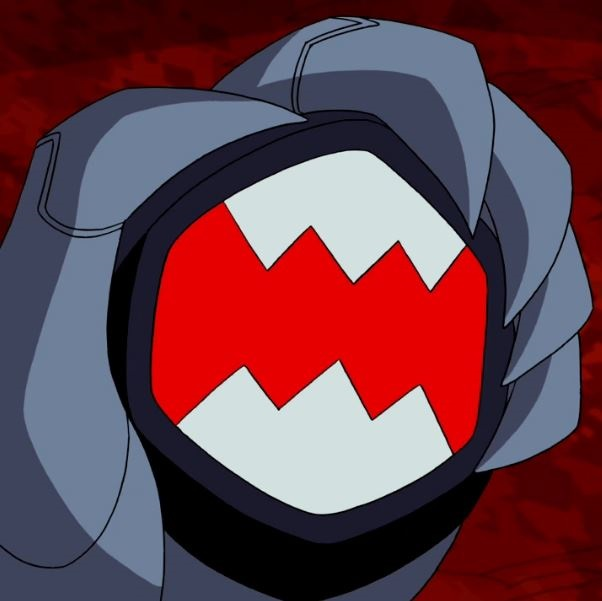

ALIENÍGENAS DEL NEMETRIX
El nemetrix es una copia del omnitrix creada por el doctor Psychobos este lo creó en base a una copia tomada por Malware y una parte robada del omnitrix ya que no supo como replicarla. El nemetrix funciona de manera similar al omnitrix solo se tiene que elegir la especie y presionarla incluso con la función de los supremos gracias a Albedo, pero tiene una desventaja y es que si se utiliza en algo como un humano se le corromperá el cerebro por eso se lo tiene que poner algo como un perro o a cualquier animal que te haga caso.

CRABDOZER
Este alien es proveniente de la estrella Pyros el mismo planeta que Fuego ya que esta especie es el depredador de los pyronitas. Sus poderes son tener una armadura que los protege del calor, fuego y lava del planeta, tener patas de cangrejo que les ayuda a caminar por este entorno deformado y tener una saliva la cual extingue completamente las llamas de los pyronitas.
APARECE EN:

BUGLIZARD
Esta especie son nativos del planeta Lepidoterra donde habitan los lepidoterranos (La especie de Insectoide) los cuales son sus presas ya que son sus depredadores. Este alien tiene la capacidad de escalar por cualquier superficie, tener una cola que es muy útil para atrapar algo volador y poseer la habilidad de lanzar un gas capaz de derretir la mucosidad que Insectoide lanza o usarlo como distracción para escapar del oponente.
APARECE EN:
MUCILATOR
Este alienígena proviene del mismo planeta que Crasshhopper el cual es desconocido y su presa son los orthopterran. Esta especie tiene la capacidad de recibir demasiados golpes y estar bien y con las bolsas moradas que tiene que son pegajosas atrapar a su presa para después poder comerla sin problemas.
APARECE EN:
SLAMWORM
Slamworm tiene origen en el cinturón de asteroides Poina Lüncas de la galaxia Andrómeda estos asteroides son un mundo totalmente desértico teniendo como clima constante las tormentas de arena. Este alien puede excavar en la tierra con facilidad y digerir casi cualquier cosa sólida con su interior que es como cierras y pueden disparar un ácido capaz de derretir el metal, esto le ayuda a triturar la armadura de los talpaedan u otras especie.
APARECE EN:
TERRORANCHULA
Esta araña es de un planeta desconocido, pero se sabe que son los depredadores de la especie de Escarabola. Este arácnido posee un pelaje en sus patas y sus colmillos las cuales pueden dar indicio de como es el entorno donde vive, también tiene la capacidad de tejer unas telarañas de energía en el aire las cuales pueden atrapar y desaparecer las bolas de energía de escarabola sin problemas y puede cubrirse de esta para que quien lo toque reciba una descarga.
APARECE EN:
TIRANÓPIDO
Este dinosaurio es el depredador de los Vaxasaurios por lo que es nativo del planeta Terradino. Tiranópido tiene una armadura la cual es demasiado pesada para evitar que lo levanten, tiene una gran fuerza para devorar y por el cuerno que tiene puede lanzar telarañas lo suficientemente fuertes para inmobilizar a Humungosaurio para después comerlo fácilmente.
APARECE EN:
HYPNOTICK
Hypnotick es el depredador natural de los necrofriggianos y proviene del planeta Kylmyys. Esta especie esta en peligro de extinción por motivos de caza y venta por un polvo que producían que resultaba muy útil para sacar información o distraer al objetivo. Sus poderes son poder hacerse intangible y produce un polvo que, con el aleteo de sus alas, crea un efecto que hipnotiza al que lo mire para así comerlo.
APARECE EN:
OMNIVORACIOUS
Omnivoracious es el depredador de los galvans (La especie de Materia Gris) y cuyo origen es de hace millones de años. Este alien es como un ave del terror de la Tierra, pero mucho más astuto siendo la perdición de los galvans, para su suerte cayó un meteorito que cambió el clima del planeta, haciendo que se extingan. La muestra de ADN del nemetrix proviene del fósil que hay en Galvan Prime.
APARECE EN:
VICETOPUS
Esta especie son los depredadores de los cerebrocrustáceos y viven en el planeta Encephalonus IV. Vicetopus tiene la capacidad de recibir ataques eléctricos y no recibir daño gracias a los patrones de su cuerpo, también tienen unos tentáculos y pico que son los suficientemente fuertes como para romper la coraza de aliens como Cerebrón.
APARECE EN:
PANUNCIAN
Los panuncian son los depredadores de los splixsons y son nativos del planeta Hathor, para constrarrestar la habilidad de los splixsons ellos también pueden multiplicarse para así dividirse y cazar a cada copia con otra copia, también esta especie tiene una gran fuerza la cual les permite excavar fácilmente y pueden resistir los cambios climáticos sin problemas.
APARECE EN:
PANUNCIAN SUPREMO
Este panuncian pasó por las peores situaciones en una simulación del nemetrix en las cuales tuvo que haberse enfrentado a varios Dittos supremos para poder sobrevivir, se volvieron mucho más grandes que antes, desarrollaron una armadura la cual solo cubre la cabeza y desarrollaron mucha más fuerza pudiendo cortar metal o talar un árbol entero con la cola.
APARECE EN: